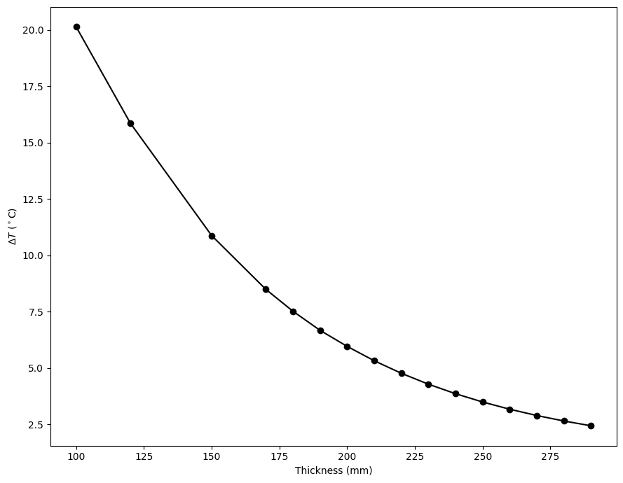

Heating Adobe Houses#
import numpy as np
import matplotlib.pyplot as plt
from time import time
import numba
from numba import jit, cuda
K0 = 273.15 # 0 Celsius in Kelvin
@numba.jit("f8(f8)", nopython=True, nogil=True, fastmath = True)
def external_temperature(sec):
h = sec/3600
h = h%24
t = 15*np.sin(np.pi*h/12 + 3.9) + 24
return K0 + t
Defining the problem#
alpha = 0.27
days = 7
duration = 3600*24*days #seconds
nodes = 300
# initialize wall temperature as a gradient
# where initial inner wall is set at 25 degree Celsius
wall = np.linspace(external_temperature(0), 25+K0, nodes)
Solving the heat equation#
@numba.jit("(f8[:],f8,f8,f8)", nopython=True, nogil=True, fastmath = True, cache=True)
def solve_heat_eqn(init_state, duration, dt, dx):
wall = init_state.copy()
counter = 0
inners = []
while counter < duration :
w = wall.copy()
for i in range(1, nodes - 1):
wall[i] = dt * alpha * (w[i - 1] - 2 * w[i] + w[i + 1]) / dx ** 2 + w[i]
counter += dt
wall[0] = external_temperature(counter)
wall[-1] = wall[-2]
inners.append(wall[-1])
return wall, np.array(inners)
External temperature for reference
def external_temperature_hour(h):
h = h%24
t = 15*np.sin(np.pi*h/12 + 3.9) + 24
return t
hours_xs = np.linspace(0, 24*days, 300)
Solve heat equation for different wall thicknesses
def get_inner_temperatures(thickness):
dx = thickness / (nodes-1)
dt = 0.5 * dx**2 / alpha
start = time()
print(f'For t = {thickness} mm:\n Iterations: {duration/dt:.0f}\n dt = {dt:.3f} s')
final, inners = solve_heat_eqn(wall, duration, dt, dx)
end = time()
print(f' Time elapsed: {end - start:.3f} s\n')
N = len(inners)
if N > 1e5:
k = int(N//1e5)
inners = inners[::k]
return inners
thicknesses = {150:[], 120:[], 100:[], 200:[]}
for thickness in thicknesses:
thicknesses[thickness] = get_inner_temperatures(thickness)
For t = 150 mm:
Iterations: 1297673
dt = 0.466 s
Time elapsed: 0.575 s
For t = 120 mm:
Iterations: 2027615
dt = 0.298 s
Time elapsed: 0.924 s
For t = 100 mm:
Iterations: 2919765
dt = 0.207 s
Time elapsed: 1.333 s
For t = 200 mm:
Iterations: 729941
dt = 0.829 s
Time elapsed: 0.330 s
Plotting inner temperatures
variations = {}
plt.figure(figsize=(12,7))
plt.plot(hours_xs/24, external_temperature_hour(hours_xs), 'k--', label='Outer wall temperature', alpha=1, linewidth=2)
for thickness in thicknesses:
inner_temps = thicknesses[thickness]-K0
xss = np.linspace(0, duration/3600, len(inner_temps))
stable_region = int(len(inner_temps)/2)
maxT = np.max(inner_temps[stable_region:])
minT = np.min(inner_temps[stable_region:])
print(f'Temperature variation: {minT:.2f} to {maxT:.2f} Celsius ({maxT-minT:.2f})')
variations[thickness] = maxT-minT
plt.plot(xss/24, inner_temps, label=f't = {thickness} mm ('+r"$\Delta T =$"+f'{round(maxT-minT,2)}'+r"$^\circ$C)")
plt.ylabel(r'Temperature ($^\circ$C)')
plt.xlabel('Time (days)')
plt.xlim(0,4)
plt.legend(loc='upper right')
plt.tight_layout()
plt.savefig('plots/4/var0.png', dpi=200)
Temperature variation: 18.56 to 29.44 Celsius (10.87)
Temperature variation: 16.07 to 31.93 Celsius (15.86)
Temperature variation: 13.94 to 34.06 Celsius (20.13)
Temperature variation: 21.00 to 26.96 Celsius (5.96)
Narrow down the temperature range
thicknesses = {180:[], 190:[], 200:[], 210:[], 220:[]}
for thickness in thicknesses:
thicknesses[thickness] = get_inner_temperatures(thickness)
For t = 180 mm:
Iterations: 901162
dt = 0.671 s
Time elapsed: 0.413 s
For t = 190 mm:
Iterations: 808799
dt = 0.748 s
Time elapsed: 0.360 s
For t = 200 mm:
Iterations: 729941
dt = 0.829 s
Time elapsed: 0.324 s
For t = 210 mm:
Iterations: 662078
dt = 0.913 s
Time elapsed: 0.298 s
For t = 220 mm:
Iterations: 603257
dt = 1.003 s
Time elapsed: 0.271 s
plt.figure(figsize=(12,7))
plt.plot(hours_xs/24, external_temperature_hour(hours_xs), 'k--', label='Outer wall temperature', alpha=1, linewidth=2)
for thickness in thicknesses:
inner_temps = thicknesses[thickness]-K0
xss = np.linspace(0, duration/3600, len(inner_temps))
stable_region = int(len(inner_temps)/2)
maxT = np.max(inner_temps[stable_region:])
minT = np.min(inner_temps[stable_region:])
print(f'Temperature variation: {minT:.2f} to {maxT:.2f} Celsius ({maxT-minT:.2f})')
variations[thickness] = maxT-minT
plt.plot(xss/24, inner_temps, label=f't = {thickness} mm ('+r"$\Delta T =$"+f'{round(maxT-minT,2)}'+r"$^\circ$C)")
plt.ylabel(r'Temperature ($^\circ$C)')
plt.xlabel('Time (days)')
plt.xlim(0,4)
plt.legend(loc='upper right')
plt.tight_layout()
plt.savefig('plots/4/var1.png', dpi=200)
Temperature variation: 20.24 to 27.76 Celsius (7.52)
Temperature variation: 20.66 to 27.33 Celsius (6.67)
Temperature variation: 21.00 to 26.96 Celsius (5.96)
Temperature variation: 21.31 to 26.63 Celsius (5.32)
Temperature variation: 21.57 to 26.34 Celsius (4.76)
\(\Delta T\) vs Thickness#
As we can see that the temperature variations around 200 mm get close to the human comfort range. Let us now plot \(\Delta T\) vs thickness.
thicknesses = [T for T in range(170, 300, 10)]
for thickness in thicknesses:
inner_temps = get_inner_temperatures(thickness)
stable_region = int(len(inner_temps)/2)
maxT = np.max(inner_temps[stable_region:])
minT = np.min(inner_temps[stable_region:])
variations[thickness] = maxT-minT
For t = 170 mm:
Iterations: 1010299
dt = 0.599 s
Time elapsed: 0.456 s
For t = 180 mm:
Iterations: 901162
dt = 0.671 s
Time elapsed: 0.402 s
For t = 190 mm:
Iterations: 808799
dt = 0.748 s
Time elapsed: 0.360 s
For t = 200 mm:
Iterations: 729941
dt = 0.829 s
Time elapsed: 0.325 s
For t = 210 mm:
Iterations: 662078
dt = 0.913 s
Time elapsed: 0.295 s
For t = 220 mm:
Iterations: 603257
dt = 1.003 s
Time elapsed: 0.270 s
For t = 230 mm:
Iterations: 551940
dt = 1.096 s
Time elapsed: 0.247 s
For t = 240 mm:
Iterations: 506904
dt = 1.193 s
Time elapsed: 0.227 s
For t = 250 mm:
Iterations: 467162
dt = 1.295 s
Time elapsed: 0.207 s
For t = 260 mm:
Iterations: 431918
dt = 1.400 s
Time elapsed: 0.189 s
For t = 270 mm:
Iterations: 400516
dt = 1.510 s
Time elapsed: 0.177 s
For t = 280 mm:
Iterations: 372419
dt = 1.624 s
Time elapsed: 0.164 s
For t = 290 mm:
Iterations: 347178
dt = 1.742 s
Time elapsed: 0.153 s
plt.figure(figsize=(9,7))
variations = dict(sorted(variations.items()))
plt.plot(variations.keys(), variations.values(), '-ko')
plt.ylabel(r'$\Delta T$ ($^\circ$C)')
plt.xlabel('Thickness (mm)')
plt.tight_layout()
plt.savefig('plots/4/var_fin.png', dpi=200)
